|
Roda JC - Vitesse (2-4) 16 december 2006
|
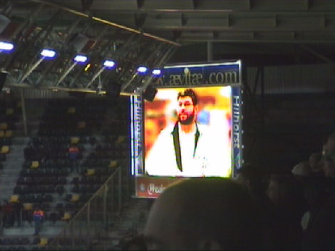
"You'll never walk alone" voor de overleden hoofdsteward Nico Broun.
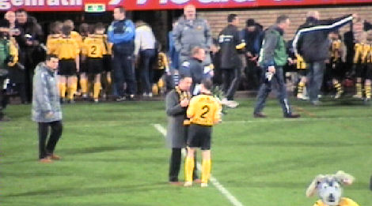
Ger Senden wordt gehuldigd voor zijn 400e wedstrijd. Dit is zijn 401ste!
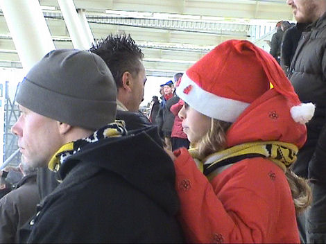
Veel commotie bij een vrije trap voor Vitesse na een tuimelpartij van Hersi.
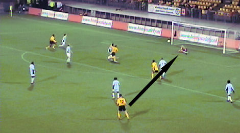
Show-keeper Wapenaar stompt een afstandschot van De Fauw weg.
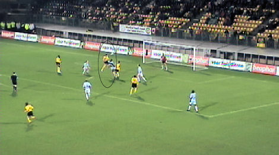
Van Tornhout kopt de bal. Wapenaar stompt weer weg.
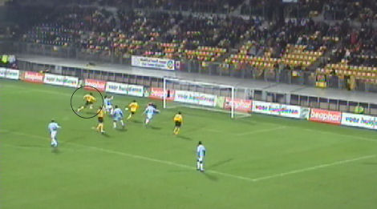
Cissé benut de reboundsituatie door de bal hoog in de touwen te schieten: 1-0,
(26').
Veel Roda-rebels bovenin Z16.
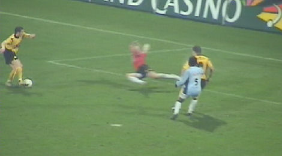
Oper zet de showkeeper op het verkeerde been.
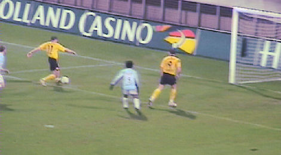
Daarna is het mooi intikken voor de Est: 2-0, (29').
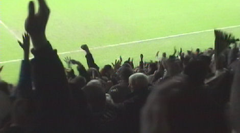
"Geneet van 't laeve, zo lang es 't kan...."
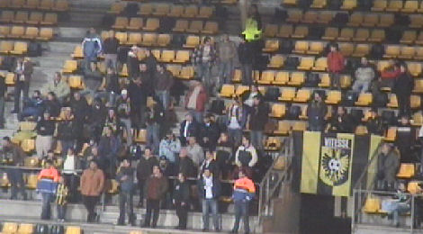
Vooralsnog weinig sfeer bij de 60 Vitesse-supporters.
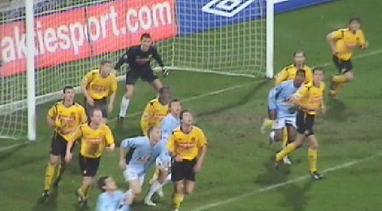
De voorsprong is geflatteerd aangezien Roda op alle fronten wordt overlopen.
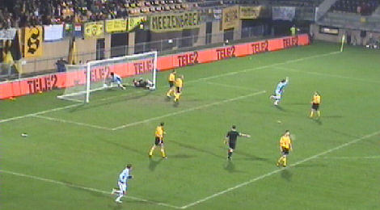
Geklungel in de defensie stelt Lazovic in staat 2-1 binnen te koppen, (38').
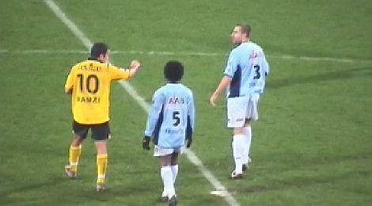
Ramzi maakt de smeerlap Sansoni nog eens duidelijk dat het behoorlijk
onfatsoenlijk is een elleboog uit te delen.
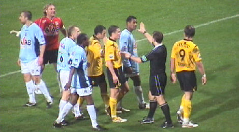
Vlak voor rust krijgt Van Tornhout een gele kaart van de selectief fluitende
Kuiper.
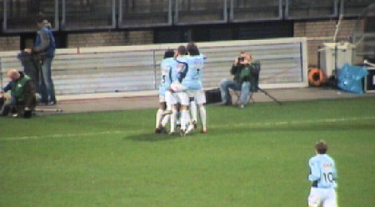
De tweede helft is amper begonnen als Pryor, Castro in de lange hoek verrast:
2-2, (49').
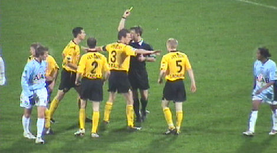
Roda wordt verder overlopen en hier moet Saeijs de orde bewaren nadat de Fauw
een gele kaart wegens protesteren heeft gekregen.
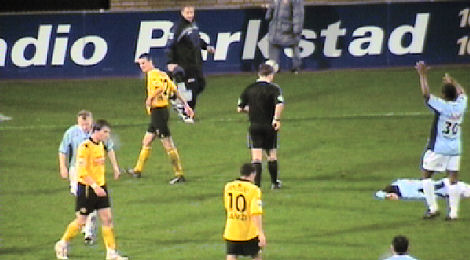
De Fauw is met gestrekte benen ingegaan op een Vitessespeler. Twee keer geel
is rood. Roda moet verder met 10 spelers.
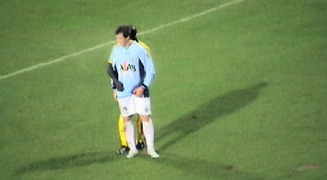
Kah dekt zijn man.
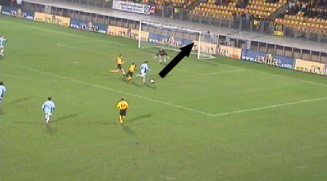
Dat doet hij niet goed want Lazovic is hem voorbij om 2-3 te scoren, (74'). Kah
en
Agustien kwamen na een kwartier in de tweede helft voor respectievelijk
Lachambre en Meeuwis. Later werd Van Tornhout nog gewisseld voor Bodor. Stuk
voor stuk onbegrijpelijke wissels waarvoor het publiek massaal zijn afkeuring
liet
horen.
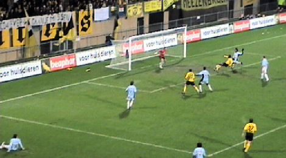
Vlak voor tijd verprutst Cissé een unieke kans op de gelijkmaker.
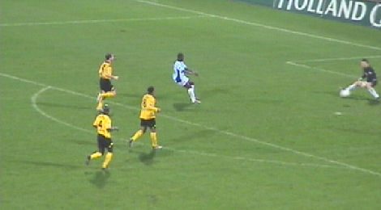
Invaller Benson scoort beheerst 2-4 in de 92e minuut. Game over!

Er wordt druk geëvalueerd in de omloop door wijze analisten.
Verloren, maar wij hebben BAVARIA....
Ray Ban!
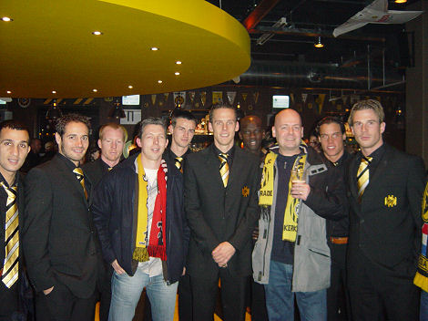
De protesten (zie Roda-NAC) hebben geholpen want deze keer was bijna de hele
selectie in de Kickoff. Jammer dat er niks te vieren viel deze keer....
© Koempels Pleasure Dome
|